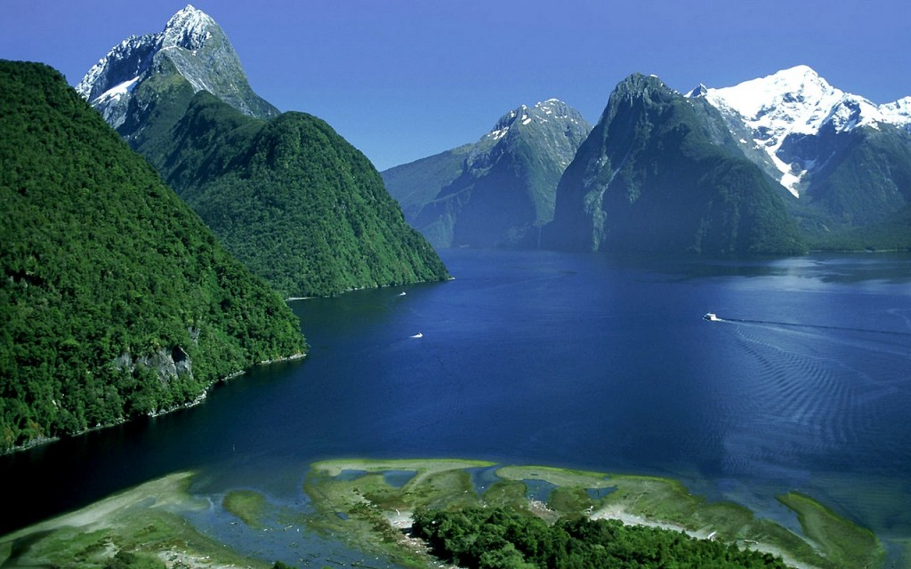
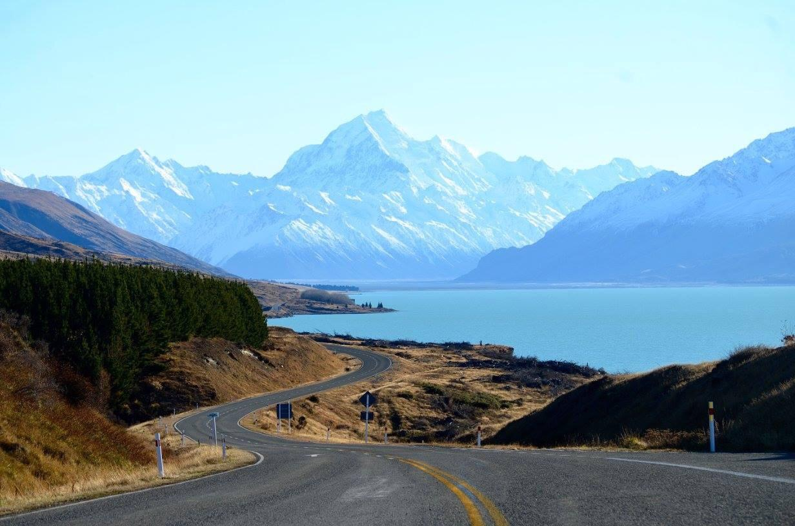

Explore the world of New Zealand
New Zealand is a truly amazing place with many magnificent landscapes and natural wonders. Majestic mountains, long rivers, high waterfalls, a unique atmosphere. It’s hard to believe that all this is located on a small piece of land surrounded by the ocean.
-ABOUT-
Our company organizes tourist trips throughout New Zealand. High mountains, noisy waterfalls, rivers and the greenest hills - this is all about New Zealand. We will help you visit all the most exciting places in the country. You will definitely see the most popular tourist spots and see incredibly beautiful landscapes with your own eyes. But also our team will be able to show you what is usually hidden from the eyes of tourists, and this will surprise you even more. This is our main difference from other travel agencies, we reveal to people the real New Zealand with its history, special atmosphere, people and their mentality. Come to visit us and we will be happy to help you discover this wonderful piece of paradise.
-TOURS-
New Zealand is famous for its gorgeous nature - geysers, mountains and lakes, forests and grottoes, glaciers and beaches. A well-developed environmental movement makes it possible to preserve all this splendour in an almost pristine state, even in areas of large cities. In addition to the most beautiful unique nature, the country has another very significant plus - the well-deserved title of the homeland of active tourism. Also in New Zealand, you can watch whales, admire the mighty fjords and millennial glaciers, wander around cosy Wellington and bustling Auckland. Well, fantasy lovers are undoubtedly aware that it was in New Zealand that the filming of the world-famous trilogy "The Lord of the Rings" took place. The surrounding area of Queenstown is still a place of pilgrimage for film fans.
Submit your application
MOUNTAINS
New Zealand is located on two large islands and about 700 small ones. The main life of the population is concentrated on the South and North Islands. The relief of the North Island is a mountainous area that occupies most of the territory. Numerous peaks of the mountain range exceed 3,000 m above sea level. The western coastal zone is predominantly fjords, with plains located on the eastern side. The North Island is the most volcanically active area of the state.
Submit your application
WATERFALLS
The waterfalls of New Zealand are distinguished by their special sophistication and grandeur, the originality of the structure of the cascades and the unusual location in the middle of the pristine subtropical and evergreen nature. Most of the waterfalls are equipped with special viewing platforms, which are located at the foot or the very top. The roads to the New Zealand water cascades are surrounded by scenic views - mountains, plains, valleys, fjords and rivers.
Submit your application
CYTY WALKS
More than 5 million people live in New Zealand. The country is not limited to Auckland, Christchurch and Wellington. Here you can find small, cozy and, most importantly, equally developed cities, where people move for a happy life. We invite you to visit the most interesting cities with a unique atmosphere and culture. You will see that New Zealand remains itself everywhere - a mysterious country with unique nature at the junction of European and island civilizations.
Submit your application
SEA TRIPS
This excursion, in addition to the classic sightseeing tour, includes a delightful boat trip along the picturesque Bay of Islands to the famous "Hole in the Rock" and landing on some of the islands. Throughout the trip we will be accompanied by curious and playful dolphins, and sometimes we may be lucky to see giant sea wanderers - whales. Diving, yachting and a variety of water sports are popular with New Zealanders. There are excellent conditions for any kind of activity.
-GALERY-

Hobbiton - the place most famous for filming the trilogy "The Lord of the Rings" and "The Hobbit"
Fjord Milford Sound - a bay with amazingly clear water, located in the Fiordland National Park, on the territory of the South IslandPark

Milford Bay on the coast of South Island
Te Wahipounamu, a conservation area in southwestern New Zealand
Valley of Geysers Waimangu
Ninety Mile Beach is a 90 mile sandy beach located on the west coast of North Island
Lake Waikaremoana is located in the eastern part of the North Island in the Te Urewera Conservation Area and is the deepest lake in the North Island
Sutherland Falls - Oceania's tallest waterfall
Nugget Point Lighthouse on the Nugget Point of the Catlins Coast South Island
The Sky Tower is the tallest building in the entire Southern Hemisphere

Lake Pukaki on South Island
Lake Tekapo embraced by a picturesque lupine field